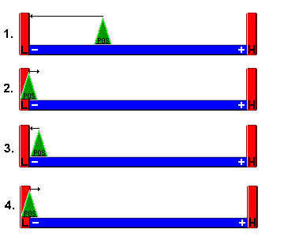
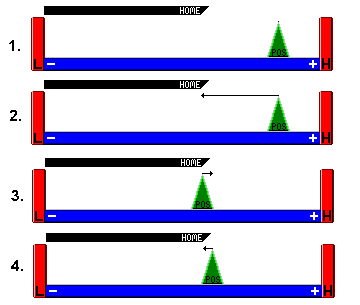
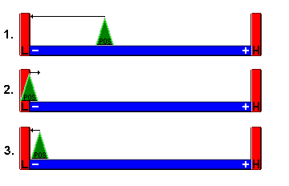
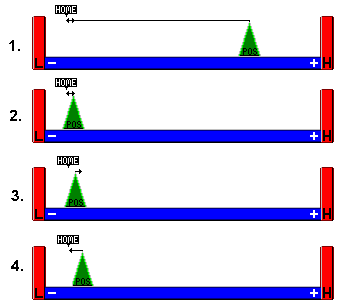
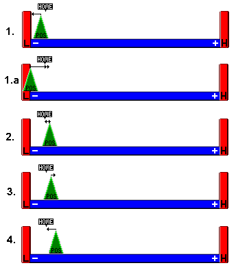

Predfined Homing Sequences
Predefined homing sequences. These functions can all be called directly from Homing PLC definition file
Call these functions in a group context to perform the sequence on all axes in the group.
- pmac_motorhome.sequences.home_rlim()[source]
Home on release of a limit
This can also be used for homing on a rotary encoder (back of motor) with an index mark on the rotation: Drive to limit and then home away from limit to the first index mark.
(Prehome Move) Jog in -hdir until the limit switch is hit
(Fast Search) Jog in hdir until the limit switch is released
(Fast Retrace) Jog in -hdir until the limit switch is hit
(Home) Home
Finally do post home move if any.
This example shows homing off the -ve limit with +ve hdir. E.g. ixx23 = 1, msyy,i912 = 10, msyy,i913 = 2.

- pmac_motorhome.sequences.home_hsw()[source]
Home on a home switch or index mark.
(Prehome Move) Jog in -hdir until either index/home switch (Figure 1) or limit switch (Figure 2)
(Fast Search) Jog in hdir until index/home switch
(Fast Retrace) Jog in -hdir until off the index/home switch
(Home) Home
Finally do post home move if any.

- pmac_motorhome.sequences.home_hsw_hstop()[source]
Home on a home switch or index mark on a stage that has no limit switches.
Detection of following error due to hitting the hard stop is taken as the limit indication.
(Prehome Move) Jog in -hdir until following error - Ixx97 (in-position trigger mode) set to 3 for this phase.
(Fast Search) Jog in hdir until index/home switch
(Fast Retrace) Jog in -hdir until off the index/home switch
(Home) Home
Finally do post home move if any.
The axis must be configured to trigger on home index or home flag this is used when there are hard stops instead of limit switches e.g. piezo walker
- pmac_motorhome.sequences.home_hsw_dir()[source]
Home on a directional home switch (newport style)
(Prehome Move) Jog in -hdir until off the home switch
(Fast Search) Jog in hdir until the home switch is hit
(Fast Retrace) Jog in -hdir until off the home switch
(Home) Home
Finally do post home move if any.
This example shows homing on a directional home switch with -ve hdir. E.g. ixx23 = -1, msyy,i912 = 2, msyy,i913 = 0.
The first figure shows what happens when the axis starts on the home switch. E.g. Pos = -20000 cts, Index = 0 cts
The second figure shows what happens when the axis starts off the home switch. E.g. Pos = 20000 cts, Index = 0 cts

- pmac_motorhome.sequences.home_limit()[source]
Home on a limit switch. - (Fast Search) Jog in hdir (direction of ixx23) until limit switch activ - (Fast Retrace) Jog in -hdir until limit switch deactivates - (Home) Disable limits and home
Finally re-enable limits and do post home move if any.
This example shows homing on -ve limit with -ve hdir. E.g. ixx23 = -1, msyy,i912 = 2, msyy,i913 = 2.

- pmac_motorhome.sequences.home_hsw_hlim()[source]
Home on a home switch or index mark near the limit switch in hdir.
(Prehome Move) Jog in hdir until either index/home switch (Figure 1) or limit switch (Figure 2)
If limit switch hit, jog in -hdir until index/home switch
(Fast Search) Jog in hdir until index/home switch
(Fast Retrace) Jog in -hdir until off the index/home switch
(Home) Home
Finally do post home move if any.
NOTE: if using a reference mark, set jdist as described under
group()This example shows homing on an index with -ve hdir and +ve jdist. E.g. ixx23 = -1, msyy,i912 = 1, jdist = 1000.
The first figure shows what happens when the index is in hdir of the starting position. E.g. Pos = 20000 cts, Index = 0 cts
The second figure shows what happens when the index is in -hdir of the

- pmac_motorhome.sequences.home_home()[source]
Dumb home, shouldn’t be needed - just executes HM command on all axes in the group
- pmac_motorhome.sequences.home_nothing()[source]
NOTHING
Simply goes through to post home move without homing or changing home status.
- pmac_motorhome.sequences.home_slits_hsw(posx, negx, posy, negy)[source]
A special seqence for two pairs of slits in which the vertical and horizontal pairs may collide with each other at the extreme of their homing direction.
move all axes to the limit away from their homing direction
home both positive axes using home switch or mark
move the positive axes out of the way
home both negative axes using home switch or mark
move the negative axes out of the way